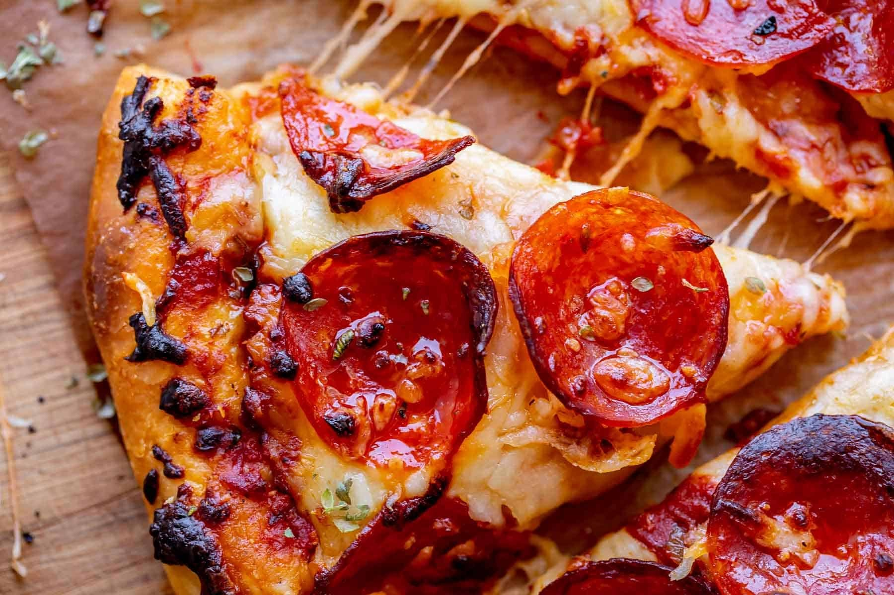

Pizza

Description
Pizza, dish of Italian origin consisting of a flattened disk of bread dough topped with some combination of olive
oil, oregano, tomato, olives, mozzarella or other cheese, and many other ingredients, baked quickly—usually, in
a commercial setting, using a wood-fired oven heated to a very high temperature—and served hot.
Ingredients
- ¾ cup (500g) 00 tipo flour
- ½ cups (375g) lukewarm water
- ¼ teaspoon (1g) active dry yeast
- ¾ tablespoon (14g) fine sea salt
Steps
- a large mixing bowl, combine flour and salt. Mix by hand to fully incorporate.
- Heat water to 98°F (36°C). Once to temperature, whisk in yeast until dissolved.
- Add yeasted water mixture to flour mixture in bowl. Mix by hand until a shaggy dough has formed.
- Grease the bowl with olive oil to ensure the dough doesn't stick to the bowl, then tightly cover with
plastic wrap. Allow dough to rise at room temperature overnight, or until the dough has doubled in size.
- Flour a work surface and scrape dough from the bowl onto the surface. Divide dough into 4 even pieces
about 220 grams a piece. Fold all sides of the dough balls into the middle and roll into taut balls. If
dough is sticking at any point add more flour to your work surface to keep dough from sticking.
- Add to a flour dusted proofing box (or rimmed baking sheet dusted with flour), cover, and let proof at room
temperature for 30-45 minutes.